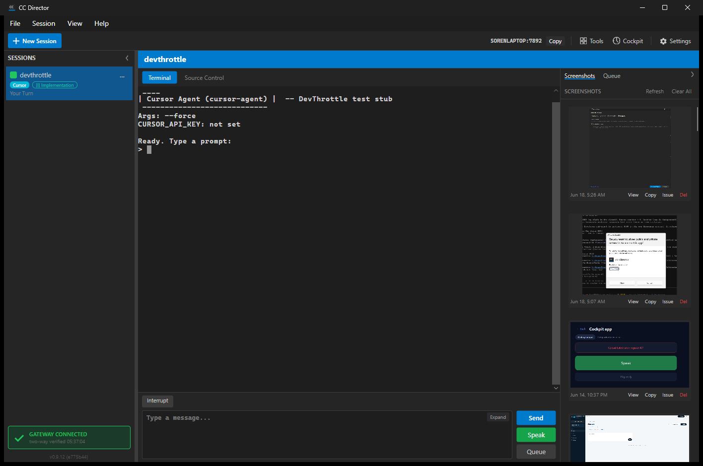
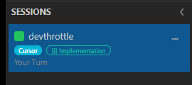

Branch: issue-517-cursor-agent (PR #521) |
Flow: flow:qa-failed → (this fix) → flow:ready-qa
A session running cursor-agent showed a Claude Code badge (Claude blue) in the
SESSIONS rail. Root cause: src/CcDirector.Avalonia/SessionViewModel.cs had no
AgentKind.Cursor arm in AgentLabel or AgentBadgeBrush, so a Cursor session
fell through to the _ => "Claude Code" / _ => ClaudeAgentBrush default. Every other
provider (Pi/Codex/Gemini/OpenCode/RawCli) added its arm when introduced; this PR missed it.
src/CcDirector.Avalonia/SessionViewModel.cs - added the AgentKind.Cursor arm to the
agent-label and agent-badge mappings:
AgentKind.Cursor => "Cursor" (label)CursorAgentBrush = #06B6D4 cyan badge, distinct from
Claude blue (#2563EB), Pi violet, Codex teal-green, Gemini red, OpenCode orange, and the
RawCli slate. Readable on the dark rail; no hard-coded color reused from another provider.LabelFor(AgentKind) / BadgeBrushFor(AgentKind) methods so the mapping is unit-testable
without constructing a live Session (whose ctor + AgentKind setter are internal to Core).
No behavior change for any existing provider.src/CcDirector.Avalonia.Tests/SessionViewModelAgentBadgeTests.cs (new) - pins that
AgentKind.Cursor maps to "Cursor" (not "Claude Code") and to the cyan brush (not Claude blue),
that every provider has its own label, and that every provider's badge color is distinct. 10 tests, all green.| AC | Expected | Actual (this fix) | Proof |
|---|---|---|---|
| AC7 - Cursor runs inside the Director, represented as a first-class provider | A session running cursor-agent is labeled "Cursor" with its own badge color in the SESSIONS rail. |
PASS - the rail now shows a cyan Cursor badge. The Control API reports
agent=Cursor for the live session. The blue "Claude Code" mislabel is gone. |
05, 06 |
0 Warning(s), 0 Error(s)).cc-director6.exe in the worktree, launched via the per-slot scheduled task
(clean svchost parentage; Control API on port 7892).agent.entries row pointing at a faithful cursor-agent.cmd stub
(the real binary is not installed on this machine - same honest proxy used by the prior Dev/QA passes; the stub is
not what was under test - the badge mapping is). The shared config.json was backed up and
restored to its original bytes afterward; the stub was removed.devthrottle repo, clicked Start Session. This exercises the genuine
SessionManager → CursorAgent path that stamps AgentKind.Cursor - not a synthetic shortcut.
devthrottle Cursor session now carries a cyan Cursor
badge (next to the [I] Implementation type chip). The terminal pane shows the running
cursor-agent with Args: --force. Control API: agent=Cursor.
03-cursor-session-launched.png / 04-cursor-responded.png, now fixed.No architecture or security drift. A pure presentation mapping in the desktop view-model; no new container, no
security-relevant surface. No docs/cencon/ update required.
The single defect QA reported (AC7 - Cursor mislabeled "Claude Code" in the session rail) is fixed and proven in the running app, with a regression test that fails if the Cursor arm is ever dropped again. I believe this is finished.